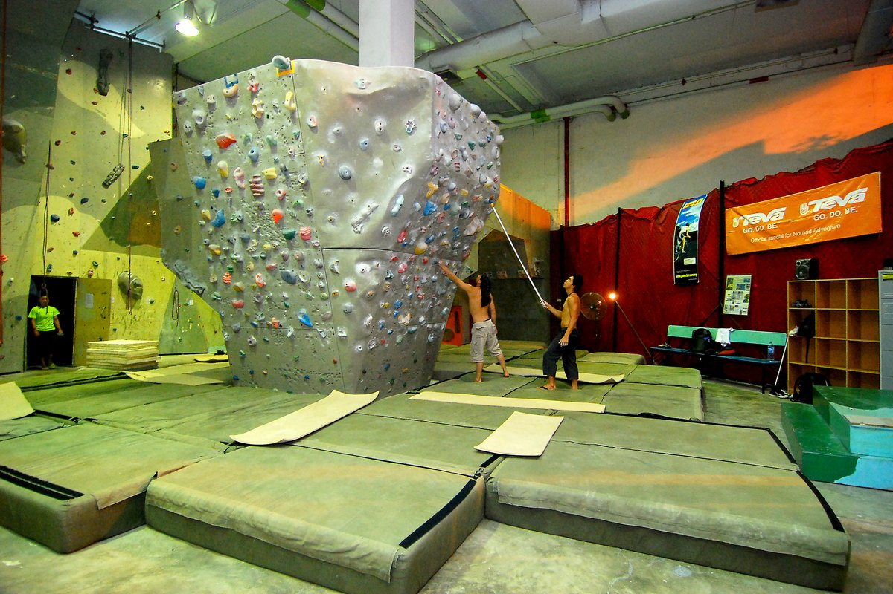

Главная / Мои интересыДанила / Мои интересы
Любопытство
в четырёх направлениях.
Движение, виртуальные миры и работа руками. Вот занятия, которым посвящён мой блог.

01 / Движение
Скалодром
На скалодроме я занимаюсь тем, что совсем не похоже на работу за компьютером. Маршрут превращается в задачу: выбрать зацепку, перенести вес и найти следующее движение.
Здесь главное — движение и внимание к маршруту.
02 / По ту сторону экрана
Игры на ПК
Я люблю играть на компьютере. Игры дают отдельное пространство для исследования миров, освоения механик и решения задач. Этой части моих интересов тоже нашлось место в блоге.
Игровые впечатления заслуживают собственных заметок.

03 / Работа руками
Пайка
Мне нравится паять. За внешним видом устройства скрываются компоненты и соединения, и пайка позволяет заниматься этой частью техники своими руками.
Мелкие детали — часть большой схемы.

04 / Техника
Компьютеры
Я люблю заниматься компьютерами. Интересно, как отдельные компоненты складываются в работающую систему и как программная часть связана с железом.
Снаружи — привычный экран. Внутри — целый мир.